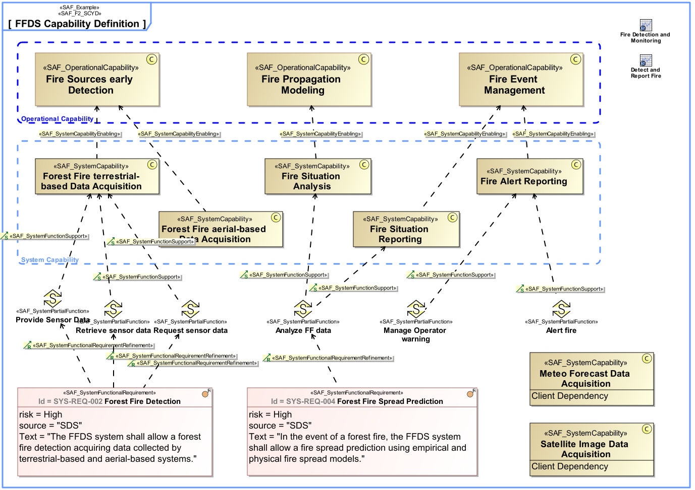

F2_SCYD System Capability Definition Viewpoint
| Domain | Aspect | Maturity |
|---|---|---|
| Functional | Taxonomy & Structure |

The System Capability Definition Viewpoint defines a taxonomy of Capabilities including composition, specialization, and dependency relationships between System Capabilities. Note: Connecting capabilities to requirements creates a linkage between two different types of conceptual problem description that helps manage the complexity of the system. At a high level of abstraction, capabilities allow an system architect to plan phases of the system evolution without the need to bear details in mind. Those details will not be lost if they are captured as requirements and traced to a corresponding capability. There is one key difference between capabilities and requirements: Requirements come from different sources, sponsored by different stakeholders, and are usually captured at different levels of abstraction. In contrast, capabilities should always represent a coherent and consolidated view of the system.
The System Capability Viewpoint supports the “Stakeholder Needs and Requirements Definition Process” and “System Requirements Definition Process” activities of the INCOSE SYSTEMS ENGINEERING HANDBOOK 2015 [§4.2 & §4.3] and contributes to the identification of System Functions, and definition of System Requirements.
A block definition diagram (BDD) featuring System Capabilities, their composition, specialization, and dependency relationships. Note: The relationship to operational capabilities shall be shown if applicable.
A tabular format listing System Capabilities, their composition, specialisation, and dependency relationships, as well as relations to operational capabilities.
The following Stereotypes / Model Elements are used in the Viewpoint:
The Diagram shows the concepts exposed by the viewpoint, and related concepts if necessary.
| Concept | Documentation |
|---|---|
| SCYcomposedOF | Specifies the fact that a System Capability consists of other System Capabilities. |
| SCYdependingON | Specifies the fact that a System Capability requires another System Capability. Aliases: UAF::CapabilityDependency |
| SCYenablingOCY | Specifies the fact that an Operational Capability integrates System Capabilities to produce a specific outcome to achieve a mission objective. |
| SCYspecializedBY | Specifies the fact that a System Capability is specialized by another System Capability. A CapabilityGeneralization is a taxonomic relationship between a more general Capability and a more specific Capability. Aliases: UAF::CapabilityGeneralization |
| System Capability | 1) A System Capability is an operation or task that performs an action to produce a specific performance-based outcome. NOTE that a system capability represents the potential to perform an action. In contrast, an operational capability may integrate several physical system capabilities to produce a specific outcome to achieve a mission objective. [Wasson2006, SystemAnalysis+Design+Development] 2) System Capabilities, as system assets, characterize the mechanical, electrical, optical, or processing features that enable a system to function, process mission resources, make decisions, and achieve a required level of success based on performance. A system capability is broader in scope than simply a functional element (and performance bounding elements), especially in large, complex ecosystems. It represents a physical potential - strength, ability, endurance - to perform an outcome-based action for a given duration under a specified set of operating environment conditions. [Wasson2006, SystemAnalysis+Design+Development] Aliases: UAF::Capability NAF4::Capability |
| Operational Capability | A Operational Capability is a high-level description or specification of an organizational unit's ability to execute a specified course of action, to implement a business process or to provide a service. Operational Capabilities typically require people, processes, infrastructure, technology and supporting systems to be implemented. A Operational Capability is an enduring element, its implementation may change over time. A necessary or desired change of a Operational Capability triggers the updated of involved systems or the integration new systems. Aliases: UAF::Capability NAF4::Capability |
The Diagram shows the implementation of exposed concepts.